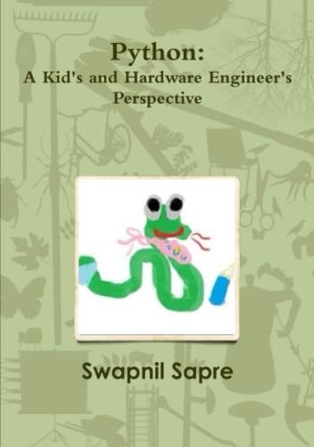
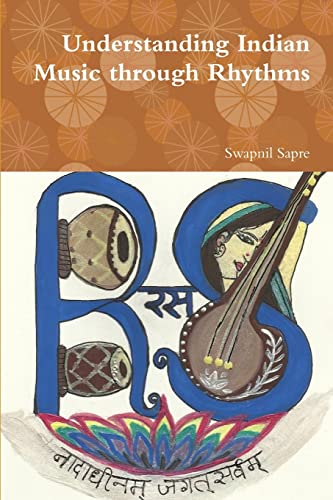
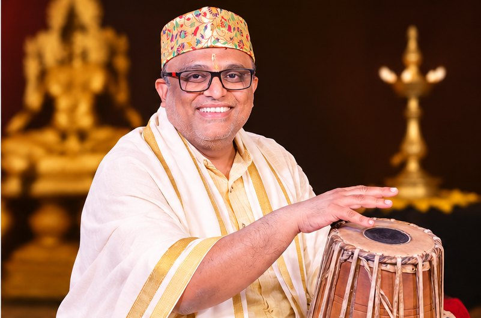

मुंगी उडाली आकाशी: When the Small Transcends the Infinite
Sant Muktabai's abhang about the ant that swallowed the sun, read as a lesson for how tiny edge chips and small teams can do the impossible.
SwapnaLoka · स्वप्नलोक · the pen site of
Builder · Innovator · Entrepreneur
A semiconductor chip, system and system-software veteran with 24+ years of taking products from spec to silicon to volume. Today I lead engineering for ultra-low-power AI processors as Head – Chip and Systems Engineering at Ambient Scientific. I advise, consult and coach teams, lead programs, and write poems and play percussion.
IIM Bangalore · 2.5-year PGSEM, Software Enterprise Management

About
I'm a semiconductor and systems leader with over two decades across ASIC/SoC design, chip architecture, AI processors, embedded systems, product engineering and high-volume manufacturing. I have held engineering and product roles at Ambient Scientific, Western Digital, AMD, Freescale/NXP, Mindtree and Wipro, which gives me an end-to-end view from system architecture and silicon to software, productization and commercial deployment.
Today I am Head – Chip and Systems Engineering at Ambient Scientific, the AI processor company, where I lead the full silicon-to-system journey of ultra-low-power AI processors: chip, boards, system software and production. I also work as an independent advisor to deep-tech startups and emerging technology organizations. Mostly I help ideas grow into viable, scalable, market-ready products.
Beyond technology I care about entrepreneurship and intrapreneurship, mentoring young engineers, semiconductor skilling and India's deep-tech ecosystem. I studied at IIM Bangalore in its rigorous 2.5-year Post Graduate Programme in Software Enterprise Management (PGSEM), and I was recognized by the President of India for a paper on re-engineering engineering education.
I'm also a trained Tabla and Mridangam player, a singer of ghazals, bhajans and abhangs, a Hindi poet who writes as "Noor" / "Sopaan Noor", and a teacher of rhythm. I study Dharma and Jyotish (Indian astrology), and I still love a good game of Kho Kho or Kabaddi.
Building technology with purpose, businesses with responsibility, teams with trust, and people with empathy.
Now · Silicon to system
Since 2020 I have led engineering at Ambient Scientific, the AI processor company. My teams take ultra-low-power AI processors from specification to GDS2, through first silicon and system software, to customer boards and high-volume production. That is one owner across chip, system and software, working with partners around the world.
Implementor and product system architect for complex AI SoC and CPU prototypes. I own pre- and post-silicon verification and validation, through to final productization.
Hardware, software, design, verification and validation are aligned around one platform and prototype approach, using FPGA, embedded machines and algorithms. Every SDK release ships with test, evaluation and customer boards.
I built an end-to-end validation methodology from scratch for always-on audio wake-word and image/video modules. It opened the platform to ML and AI application developers.
Test vectors for wafer and die sort, characterization and qualification. Foundry and wafer operations, OSAT, assembly and packaging, then high-volume manufacturing with cost optimization.
I lead cross-functional chip, system and software teams and work with foundry, packaging and customer partners around the world. The goal is a dependable path from prototype to product.
Flash-storage SoCs and product lines at Western Digital (SD, microSD, SSD, NVMe, with live demos at MWC and COMPUTEX), plus Fusion SoC verification at AMD and ARM validation at Freescale.
Builder · Innovator · Entrepreneur
I learn by shipping. Alongside silicon programs, I start and grow ventures where technology meets culture, music, learning and well-being.
A dharmic companion for the family: tradition, faithfully told. Includes a paid "Ask Chiluka" guidance service and an installable app.
chiluka.online →A lineage-centred platform connecting students with gurus of Indian classical music. Its motto is "Every swara counts."
swarakul.online →School of Rhythm and Seven Swaras, formerly Rhythm Seven. It teaches Hindustani and Carnatic music and percussion to learners from many backgrounds.
About Damruki →Holistic nutrition and wellness practice led by Dr Suguna Sapre, with the SuViva wellness network around it.
About Suphala Care →School of Rhythm and Seven Swaras (formerly Rhythm Seven)
Damruki teaches Indian classical music, both Hindustani and Carnatic, and percussion to children and adults from many cultures and professions. It treats music as a language, percussion as both science and art, and practice as a path to Nada Yoga, the union of sound and consciousness.
Holistic Nutrition & Wellness Solutions
Suphala Care is the nutrition and wellness practice of Dr Suguna Sapre, a nutritionist with a PhD in renal nutrition. It builds personal food plans around each family's needs, tastes and traditional Indian kitchen. I build and run its digital platform, from the website and online booking to programmes and the SuViva network, and help shape its growth.
Took edge-AI SoC and CPU prototypes through validation, tape-out, wafer sort, OSAT and production ramp.
Built proof-of-concept products for MWC 2018/2019 and COMPUTEX 2019, including a 1 TB SD card and the first SD-form-factor NVMe card.
An early voice for open hardware in India, as an author and speaker at FOSS.IN.
Advisory · Consulting · Coaching
Journey
Part-time engagements in FPGA prototyping, deep-tech GTM, AI vision chips, cryogenic ICs, AR/VR learning, and teaching.
Leads the full silicon-to-system lifecycle of ultra-low-power AI processors for the AI processor company: chip spec to GDS2, pre- and post-silicon verification and validation, bring-up and embedded systems, SDK and system software, boards, and tape-out to high-volume production. More →
Flash-storage products (SD, microSD, SSD, NVMe), from SoC architecture to certified shipping product. Ran the SD/microSD product line.
Fusion SoC verification. Led the global graphics OVC and verified the DDR3 PHY DFx.
DMA controller architecture, a configurable SoC verification platform, and DO-254 IP. Clients included Intel and Nokia.
ARM platform SoC verification. Received the "BRAVO" award for the ARM validation suite.
IEEE 1394 FireWire and SATA IP, plus DO-254 aircraft-engine control IP.
Taught VLSI and embedded systems, and built embedded products.
Writing
I write technical guides for engineers, a course book on rhythm, and Hindi verse under the pen name Noor / Sopaan Noor. Click a cover to buy it on Amazon.
 Technology · 2012
Technology · 2012

Technology · 2012
Music · 2016 Hindi poetry
Hindi poetry
All books by Swapnil Sapre on Amazon →
Sant Muktabai's abhang about the ant that swallowed the sun, read as a lesson for how tiny edge chips and small teams can do the impossible.
A practical framework that weighs accuracy, latency, power, memory and cost when choosing a model for a microcontroller-class device.
Why the SDK, not the silicon spec sheet, decides whether developers adopt an AI chip, and how to design for it from day one.
Hindi poetry · हिंदी काव्य
शब्दों में सुर, सुरों में शब्द।
Rhythm in words, words in rhythm.
नूराना · भाव संग्रहIf rhythm is my first instrument, words are my second. I write in Hindi as "Noor" (light) and "Sopaan Noor" (steps of light). My ghazals, nazms, geet and bhajans are about love, longing, devotion, family, Dharma and the quiet joy of ordinary days.
For promoting Hindi literature I have been honoured as a "Literary Colonel". I organize Kavi Sammelans and poetry ensembles where poets, singers and musicians share one stage, and I often set my own verse to tune and taal.
Music & arts

I started Tabla at six in Bhopal under Shri Sanjay Mishra. I then completed a 10-year course at Indira Kala Sangeet Vishwavidyalaya, Khairagarh, trained for five years in Pune with Shri Suresh Samant, and have studied for the last 15 years with Dr. Aneesh Pradhan. In Bengaluru I trained in Mridangam under the late Vidwan Dr. Nandyala Ramamurthy.
I also sing. Ghazal is especially close to my heart, both the classic poets and my own verse. I sing bhajans, abhangs and kirtans too. I have accompanied vocal and instrumental artists and Kathak, Bharatanatyam and contemporary dance.
Flute with Tabla and Mridangam, from Thyagaraja to Bollywood. Pick a mood:
 Vandanamu Raghunandana · Thyagaraja
Vandanamu Raghunandana · Thyagaraja
 Tamboori Meetidava · Purandaradasa
Tamboori Meetidava · Purandaradasa
 Thyagaraja & Purandaradasa Aradhana · on TV
Thyagaraja & Purandaradasa Aradhana · on TV
 Sri Krishna Bhakti Manjari
Sri Krishna Bhakti Manjari
 Shri Rama Bhakti Manjari · Rama Navami
Shri Rama Bhakti Manjari · Rama Navami
 Ganesha Bhakti Manjari
Ganesha Bhakti Manjari
 Saja Lo Ghar Ko Gulshan Sa · Awadh Mein Ram Aaye Hain
Saja Lo Ghar Ko Gulshan Sa · Awadh Mein Ram Aaye Hain
 Prabhu Ramchandra Ke Doota
Prabhu Ramchandra Ke Doota
 Nighalo Mi Gheun Datta Chi Palaki · Marathi
Nighalo Mi Gheun Datta Chi Palaki · Marathi
 Bramha Shodhile Bramhanda Milale · Marathi
Bramha Shodhile Bramhanda Milale · Marathi
 Koi Kahe Kehta Rahe · Dil Chahta Hai
Koi Kahe Kehta Rahe · Dil Chahta Hai
 Har Ghadi Badal Rahi · Kal Ho Naa Ho
Har Ghadi Badal Rahi · Kal Ho Naa Ho
 Koi Nahi Mera · bansuri & tabla
Koi Nahi Mera · bansuri & tabla
 Yaaron, Dosti Badi Hi Haseen Hai
Yaaron, Dosti Badi Hi Haseen Hai
 Papa Kehte Hain · a journey of dreams
Papa Kehte Hain · a journey of dreams
Beyond work
A hobbyist at heart. These interests feed my art, my teams and my ventures.
Studying our scriptures and the poet-saints, from Sant Muktabai's abhangs to Purandaradasa's kritis, and asking what they mean for modern life and work. This is also the heart of Chiluka.
A keen student of Vedic astrology: grahas, nakshatras and the panchang. To me it's a traditional knowledge system and a language for time and rhythm.
A fan of India's own field games. They teach speed, strategy, breath control and team trust, which are also good lessons for an engineering team.
Quiet mountains, smoky villages, riverbeds, seashores and ancient temples. I seek out folk rhythms and the stories people still live by.
Sound as meditation, and music as a means of healing, discipline and happiness. Holistic education is something I care deeply about.
FPGA boards, tiny RISC-V cores and Python scripts on weekends, and teaching kids to build things.
Connect
I'm open to advisory, consulting, coaching, mentoring and speaking engagements. I also enjoy collaborating on music and poetry.
Based in Bengaluru, India